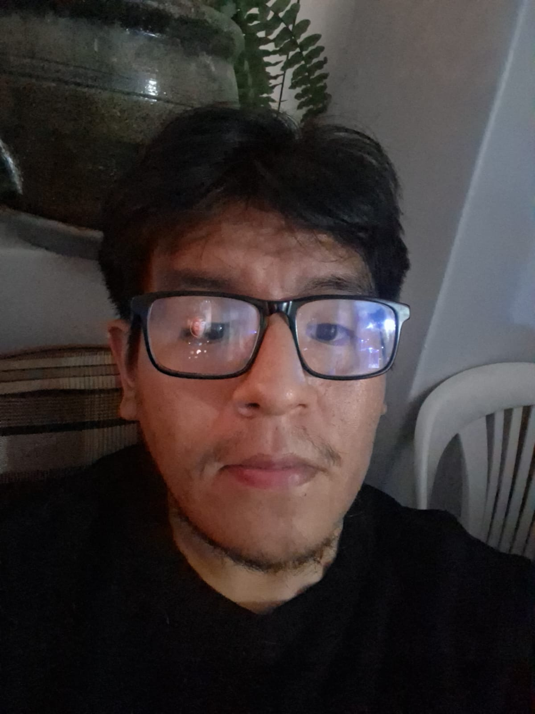
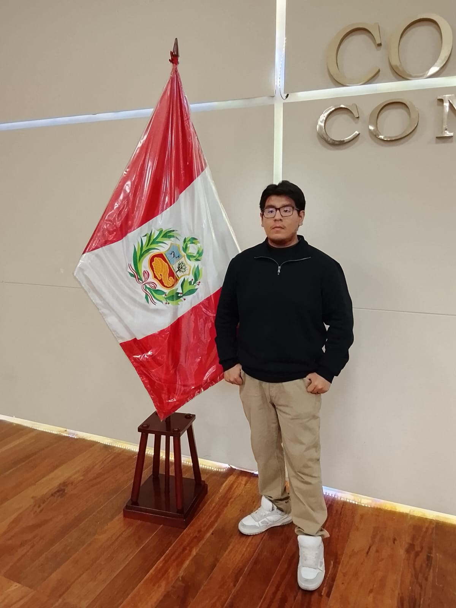

Estudios universitarios
Universidad Nacional del Santa
Formación profesional en curso.PORTAFOLIO PERSONAL
Estudiante universitario, curioso por la tecnología y apasionado por transformar ideas en experiencias digitales.

01 — UN POCO SOBRE MÍ

¡Hola! Soy Jerik, estudiante de la Universidad Nacional del Santa. Me gusta aprender, explorar nuevas herramientas y desarrollar soluciones que unan creatividad y tecnología.
Me considero una persona comprometida, con disposición para asumir retos y seguir creciendo tanto en el ámbito académico como personal. Este espacio reúne parte de mi recorrido, mis intereses y los proyectos en los que voy trabajando.
02 — FORMACIÓN Y HABILIDADES
Un resumen de mi formación, conocimientos y herramientas que forman parte de mi aprendizaje.
Universidad Nacional del Santa
Formación profesional en curso.Estudios escolares culminados
Base académica para mi desarrollo universitario.Explorar, practicar y convertir conocimientos en proyectos reales.
03 — TRABAJOS SELECCIONADOS
Un espacio para mostrar ideas, prácticas académicas y experiencias que reflejan mi evolución.
const idea = "crear";
function hacerRealidad() {
return idea;
}
01* Las tarjetas son ejemplos visuales iniciales. Sustituye sus títulos y diseños por tus proyectos reales.
04 — LO QUE ME MUEVE
Temas que despiertan mi curiosidad y en los que busco seguir aprendiendo y desarrollándome.
Crear sitios funcionales, accesibles y agradables para las personas.
Descubrir herramientas y soluciones para nuevos desafíos.
Comunicar ideas a través de recursos visuales y experiencias.
Compartir conocimientos y construir mejores resultados en equipo.
Crear apps que ayuden a la comunidad a resolver problemas cotidianos al alcance de su mano.
05 — NOTAS Y APRENDIZAJES
Ideas, reflexiones y apuntes sobre tecnología, vida universitaria y crecimiento personal.
Experiencias, retos y aprendizajes que forman parte de este camino.
La práctica constante como parte fundamental del desarrollo.
Una mirada al proceso de explorar, probar y mejorar.
* Entradas demostrativas listas para reemplazar por tus publicaciones.
06 — MI CAMINO
Cada curso, proyecto y experiencia suma una nueva perspectiva. Mi objetivo es seguir aprendiendo, aportar valor y convertir cada desafío en una oportunidad de crecimiento.
07 — HAGAMOS CONTACTO
Si deseas conversar, compartir una propuesta o conectar, puedes escribirme mediante este formulario.
Perú
yionel.iparraguirre@gmail.com
Universidad Nacional del Santa